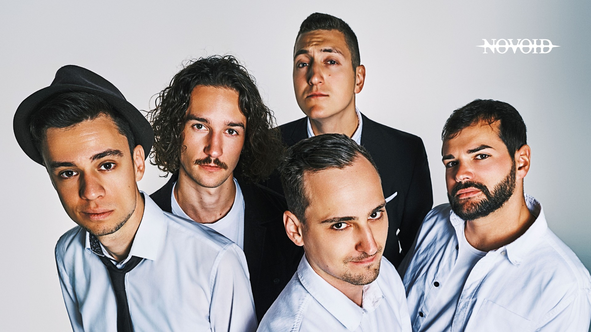

BANDPORTRAIT · 16. NOVEMBER 2026
NOVOID – Solid Rock aus dem Rheintal
Fette Riffs, ehrlicher Rock und null Schnickschnack! NOVOID aus Diepoldsau bringt seit 2015 Solid Rock auf die Bühne, und das mit einer Vorgeschichte, die niemand erwartet: Angefangen hat alles in der Kirche.

Von der Kirche auf die Rockbühne
NOVOID startete als Kirchenband und wollte einfach Freude mit Musik verbreiten. Dann kamen die Beschwerden wegen der Lautstärke, und die fünf Jungs dachten sich: Dann halt richtig laut.
Seither gehen sie ihren eigenen Weg. Die Mission ist geblieben, der Sound ist nur deutlich härter geworden.
Solid Rock, der knallt
Gerade, ehrlich und mit ordentlich Druck: Inspiriert von Led Zeppelin und AC/DC rockt NOVOID mit fetten Riffs und Refrains, die hängen bleiben.
Drei Alben gibt es schon, das neuste heisst «Tea Time» und erschien 2023.
Die Gesichter hinter NOVOID

LUIS DOMINGUEZ
VOCALS

PHIL KELLER
GUITAR

TILL STIEGER
GUITAR

FABIAN SÖLDI
BASS

SIMON WAGNER
DRUMS
NOVOID live erleben
Auf der Bühne fühlt sich die Band am wohlsten: Über 80 Gigs in der Schweiz und in Österreich stehen schon auf der Liste.
Dabei hat NOVOID unter anderem Uriah Heep im Conrad Sohm und Shakra im fabriggli in Buchs (2022) eingeheizt. 2025 war die Band Special Guest der Black Diamonds im Black Point in Oberriet.
Nicht mal die Pandemie konnte sie stoppen: NOVOID rockte die ersten Alive Festspiele in Bregenz und drehte 2021 das Musikvideo «Never Stop».
Weitere Konzerte findet ihr in unserem Eventkalender.
Nächster Gig
19. Dezember 2026 – live in der Bierhalle in Balgach, Schweiz.
Mehr von NOVOID
Du möchtest mehr über die Band erfahren oder wissen, wann sie das nächste Mal auf der Bühne steht? Dann schau auf ihrer Website oder ihren Social-Media-Kanälen vorbei!